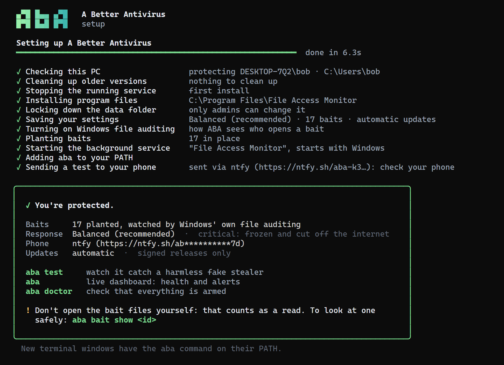

a better antivirus (aba)
Catch password-stealing malware in the act.
ABA plants fake passwords, wallets and app data that only malware would ever read. The moment something touches one, ABA freezes it.
It looks like you're not on Windows. ABA is Windows-only for now. See other systems.
It looks like this PC runs an older Windows. ABA needs Windows 10 or 11.
- Free
- Open source
- No telemetry
- Windows 10 and 11
Keep Windows Defender on. ABA is not an antivirus. It works alongside yours. Why?
Demo video
Read what happens in the video
The video is 47 seconds long. It has music and no speech. This is what it shows:
- Text on a black screen: “This is a real Discord token stealer. Windows Defender is off. Let's run it.”
- First, ABA is installed on a Windows 11 test machine with one command. Setup ends with “armed” and 18 bait files planted: fake passwords, wallets and tokens.
- The desktop. A file called “passwords” is highlighted: “Bait. Nothing legit ever opens it. Stealers always do.”
- “Now the stealer.” A file called zombiesurvival.jar, which looks like a game, is double-clicked. A timer starts.
- About two seconds later a popup appears: “ABA: javaw.exe opened a bait”. It says the program read the Discord token store, and under “What ABA did”: “Froze it”. A red stamp reads “Frozen. 158 ms after it touched the bait. Before it could send anything.”
- “It went for the Discord token. A fake one. It's bait.”
- The popup asks what should happen. “Yes = Kill it” is clicked.
- ABA's full report in a terminal: what the program read, what launched it, its hash. It ends with “frozen, then killed”. A check for the stealer's process finds nothing: “javaw.exe: gone.”
- Closing text: “A Better Antivirus. Free and open source. Catches stealers by what they do, even ones paid antivirus hasn't seen yet.”
about the name
Keep Windows Defender on.
The name is a joke. ABA is not an antivirus and does not replace one.
Antivirus tries to stop malware from running. ABA is the tripwire for when something gets past it, and that's the part antivirus is bad at. Use both.
Defender was switched off in the demo for the test. On your PC, leave it on.
why it works
Stealers go looking for files. ABA puts tripwires where they look.
Infostealers are the most common malware on personal PCs. Lumma, RedLine, Vidar and StealC are some of them. They sweep your browsers, crypto wallets, Discord and Telegram sessions and documents, zip it all up and upload it, usually within seconds.
Most of them collect first and upload at the end. Collecting means opening files in known places. ABA puts fake ones in exactly those places. Your own apps have no reason to open them. A stealer does.
-
passwords.txt
Fake files
A password list on your Desktop, in Documents and in your home folder. A wallet recovery phrase, 2FA backup codes, a KeePass database.
Every install names them differently, so a stealer can't skip them by name.
-
apps you don't use
Fake app data
Browser profiles for Opera, Vivaldi and Yandex with saved logins and cookies in them. MetaMask, Exodus, Electrum and Atomic wallets. Telegram sessions, Discord tokens, FileZilla servers, AWS keys.
ABA checks what you really have installed and never fakes data for those apps. The app isn't there, so nothing legitimate ever reads its data.
-
Profile 23
A fake profile in the browsers you do use
An extra profile folder next to your real ones in Chrome, Edge and Brave, with saved logins and cookies.
Stealers take every profile folder. The browser only opens the ones it knows, so it never touches this one.
-
optional
Canary tokens
The fake AWS keys and a link in the password file can be real canarytokens.org tokens.
If a stealer gets your data and someone uses them later, you get an email, even if your PC was never online to tell you.
ABA catches stealers by what they do, not by recognising the file. So it works on brand-new ones that no antivirus has a signature for yet.
how it works
What happens when something touches a bait
-
A program opens a bait
ABA holds a lock on every bait. Windows pauses the program inside the open and tells ABA at once.
-
ABA judges how serious it is
An unsigned program running from Temp, Downloads or your Desktop? A script host like PowerShell? Something going through several apps' data within two minutes? Those are critical. Signed, installed software is only noted.
-
It freezes the program, before it can upload
Typically about 0.1 seconds after the bait was opened. The stealer gets fake bait contents, not your real data.
A stealer is rarely one program, so ABA freezes the whole thing: the reader, what it started, what started it, and other running copies. They are held where only ABA can release them.
-
It checks before it blames
ABA verifies the program's code signature. If it turns out to be a signed, legitimate app, ABA unfreezes it and just makes a note.
-
You get an alert, and you decide
A popup on your desktop, and a message on your phone if you set that up (ntfy, Discord, Pushover or email).
Kill it if it's malware. It's mine if it's one of your apps: that undoes everything ABA did and stops alerts for that app. Not sure? It stays frozen until you decide.
aba test
A harmless copy of ABA in your Temp folder is about to read passwords.txt on the Desktop, exactly the way a stealer would. Nothing leaves your PC and your network isn't touched.
- Caught
- critical: unsigned program running from a user-writable folder: typical of stealers
- Frozen
- 72 ms after it opened the bait, before it could read a byte
- Alerted
- popup on your desktop, and your phone (ntfy)
- Cleaned up
- the fake stealer was killed and deleted
You choose how hard it hits
| Setting | Critical threat | Suspicious |
|---|---|---|
| Alert only | Tell you | Tell you |
| Balanced default | Freeze it and block its internet | Tell you |
| Strict | Freeze it, block it and cut the whole PC off the network | Freeze it |
One command, aba release, undoes every response.
Light on your PC
No kernel driver. No background scanning. No CPU use while idle. As a backup to the instant freeze, ABA uses Windows' own file auditing.
Want every detail? Read the full “How it works” on GitHub.
download
Get ABA
Free. No account. No telemetry. Setup takes about a minute.
You're on a Mac. ABA only runs on Windows 10 and 11 for now. A macOS version is being worked on. There is no date yet.
You're on Linux. ABA only runs on Windows 10 and 11 for now. A Linux version is being worked on. There is no date yet.
You're on a phone or tablet. ABA runs on Windows PCs. Open this page on your PC to install it.
ABA only runs on Windows 10 and 11 for now. Open this page on a Windows PC to install it.
This PC seems to run an older Windows. ABA needs Windows 10 or 11.
-
Windows
Available Your systemWindows 10 and 11. One installer for both x64 and ARM64 PCs.
Download ABA-Setup.exeThe newest version, straight from ABA's releases on GitHub.
-
macOS
Not yet Your systemBeing worked on. No date yet.
-
Linux
Not yet Your systemBeing worked on. No date yet.
What happens after you click download
-
Open the file
Find
ABA-Setup.exein your Downloads folder and open it. -
Windows will warn you. That's expected for now.
ABA's installer is not code-signed yet. An application for signing is pending. Until then Windows doesn't recognise the file, and it shows a blue warning for any app it doesn't recognise.
To get past it:
- Click More info.
- Check that the app is
ABA-Setup.exe, then click Run anyway.
1. Click “More info”
Windows protected your PC
Microsoft Defender SmartScreen prevented an unrecognized app from starting. Running this app might put your PC at risk.
More info
2. Click “Run anyway”
Windows protected your PC
Microsoft Defender SmartScreen prevented an unrecognized app from starting. Running this app might put your PC at risk.
What the warning looks like. This is a drawing, not a screenshot. Your browser may warn you too, saying the file isn't commonly downloaded: choose to keep it. Want to be sure first? Check the file's fingerprint (SHA-256)
A warning like this is a good reason to be careful. Every release lists the SHA-256 fingerprint of each of its files. If your download has the same fingerprint, it is the same file, byte for byte.
- Open SHA256SUMS.txt from the latest release and find the line that ends in
ABA-Setup.exe. -
Open PowerShell (press Start, type PowerShell, press Enter) and run this. It only reads the file:
(Get-FileHash "$HOME\Downloads\ABA-Setup.exe").Hash - The long code it prints must be the same as the one in
SHA256SUMS.txt. Capital and small letters don't matter. If they differ, don't run the file.
The list itself is signed with ABA's release key (
SHA256SUMS.txt.sig). How releases are protected. -
Say yes when Windows asks for permission
ABA needs administrator rights to install its background service and plant the baits.
-
Answer two questions
Recommended asks just two things: whether you want alerts on your phone, and whether ABA should keep itself up to date. It uses sensible defaults for the rest. Customize lets you pick every bait and response.
-
Watch it catch a fake stealer
Setup ends by offering a safe test: a harmless fake stealer reads a bait and you watch ABA freeze it. After that you're protected, and ABA runs in the background.

The end of setup. Tap or click the picture to see it full size.

One rule afterwards: don't open your bait files. Opening one counts as a read, and ABA will react. To see what's in a bait, use aba bait show instead.
For technical users: install from PowerShell
In PowerShell:
irm https://raw.githubusercontent.com/vulnix0x4/a-better-antivirus/main/install.ps1 | iexIt downloads the latest release for your PC, checks it against the release's SHA256SUMS.txt, and starts the setup. Read the script first if you like.
Only ever paste irm … | iex commands from sources you trust. It's also how many stealers get installed (“paste this to fix your PC”). This one is in the open, short, and refuses to run a download whose checksum doesn't match.
Or pick a file by hand from the latest release and check it against SHA256SUMS.txt.
what it changes
What ABA changes on your PC
This is everything. Uninstalling undoes it.
C:\Program Files\File Access Monitor
Removed
C:\ProgramData\FileAccessMonitor. Only administrators can read it.
Removed. Your alert history is kept unless you uninstall with --purge.
aba command works.
Removed
What goes over the network
- Phone alerts, if you set them up.
- Canary token creation, if you opt in. Your email address is sent to canarytokens.org.
- With automatic updates on, one request a day to
api.github.comfor the latest release.
Nothing else. No telemetry.
Why is it called “File Access Monitor” on my PC?
So it doesn't advertise itself to malware that checks for traps. It is low profile, not hidden: it's fully visible to you.
To remove it
Run aba uninstall in PowerShell. It undoes everything in the table above.
honest limitations
What ABA can't do
It's a tripwire, not a shield. You should know where it stops before you rely on it.
-
It only catches stealers that touch a bait
ABA catches stealers that go looking for files. A stealer that only grabs your real browser data and never touches a bait won't trip it.
ABA is open source, so a stealer can be written to know about it. What it can't do cheaply is tell which files are baits. But one that reads each browser's own list of profiles, takes only those and touches nothing else on the PC, stays under the wire.
-
A fast stealer may get something out first
A stealer is usually frozen about 0.1 seconds after it opens a bait. When ABA has to wait for Windows' event log instead, it takes from a few milliseconds to about a second.
A stealer that uploads each item the moment it reads it may send something before that. Freezing stops whatever it hasn't sent yet.
-
It can't stop malware that has administrator rights
Malware running as administrator can stop ABA's service, switch off the audit setting or remove its firewall filters. ABA alerts you if auditing is switched off, but it can't defend against an attacker who already owns the machine.
-
The instant freeze is deliberately cautious
It skips programs running as administrator, and anything it can't pinpoint with certainty. Those are still caught through the event log, just a little later.
-
Hidden code is judged by its results
Stealers often hide inside a legitimate program. ABA can't watch that happen: it would need a kernel driver or Microsoft's protected-antivirus signing, and it has neither.
It catches them by what they read, and by the injected code they leave in the memory of Windows programs. Some newer disguises (module stomping, process ghosting) get past that memory check; the rule about reading several apps' data still applies to them.
A stealer hidden in an app you trusted, reading only the one bait you trusted that app with, would get through. Nothing real works that way, but it's possible. And Windows' own desktop programs, such as
explorer.exe, are never frozen even with code injected into them: their internet is cut instead. -
A program that's already gone can't lead to what started it
ABA freezes whatever started a stealer by looking at the stealer while it is alive. If a program reads a bait and exits before ABA can look at it, on a PC where the instant freeze couldn't single it out, it is still reported and its file is still cut off from the internet. But ABA can't tell what started it.
-
If ABA's service is killed mid-incident, what it froze is ended
A frozen program with nobody left to release it would otherwise stay frozen for good. This only happens if the service crashes or is killed. Stopping, updating or reinstalling ABA doesn't end anything: frozen programs stay frozen.
-
Some of your own software reads files
Backup, sync and search tools can trip a bait. One click on It's mine handles that. A backup tool that copies your whole AppData folder looks like a stealer's sweep until you allow it.
-
One bait is quieter than the rest
The fake AWS keys file (
~/.aws/credentials) is read by many developer tools. So a signed program reading it is only logged. Unsigned programs and scripts still trip it, and the other baits are unaffected. -
Desktop popups need you to be signed in
Detections are always logged, phone alerts always go out, and ABA responds either way.
-
It keeps a low profile, but it isn't hidden
The service is called “File Access Monitor” so it doesn't advertise itself to malware that checks for traps. It is fully visible to you.
This is a shorter version. The full list is in the README, and nothing is left out there.
open source
Don't take our word for it. Check.
-
All of the code is public
ABA is free and open source under the MIT license. Anyone can read what it does.
-
Releases are built in the open
GitHub builds every release from a tagged version of the code. Each one ships a list of checksums, signed with ABA's release key.
-
Updates must be signed
ABA only installs an update whose signature checks out and whose file matches the signed checksum. It never downgrades, and it rolls back if the new version doesn't start.
-
Found a way around it?
ABA runs with system rights, so bugs in it matter. Please report them privately.
This website keeps the same promise. No analytics, no trackers, and nothing loaded from other sites. The video plays from here.
And keep Windows Defender on.